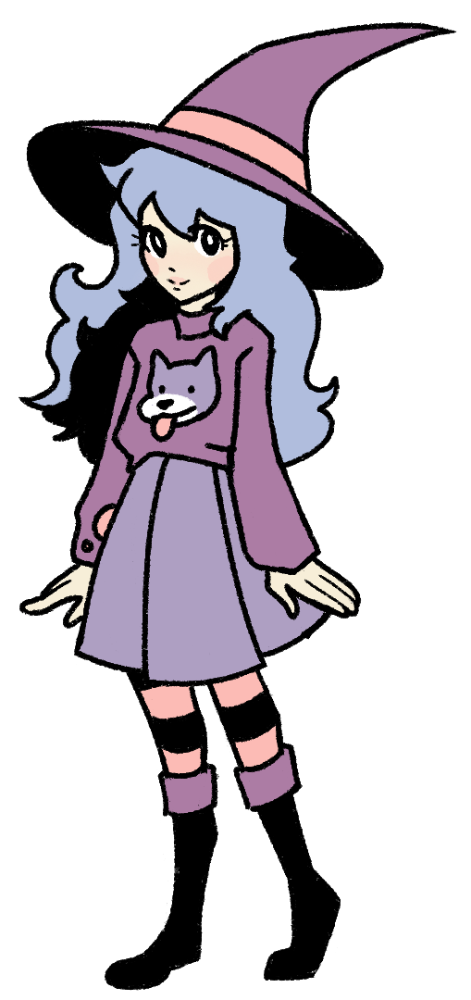

Hi There!

Welcome to my website!!!
\(^ o ^)/
I'm Lilac, just your average internet witch creating
a comfy home on this side of the internet.
I'm still pretty new to all this,
and this website is still a work in progress!
But feel free to explore and poke around ^w^
Update
I've decided to move onto greener pastures! But no worries you can join me. I'm a bit concerned about making my Stagram accessible to any stranger online,
SO I made a password protected link/QR Code below! Solve the password and we can become Stagram mutuals! (☆∀☆)

Password-Protected Link